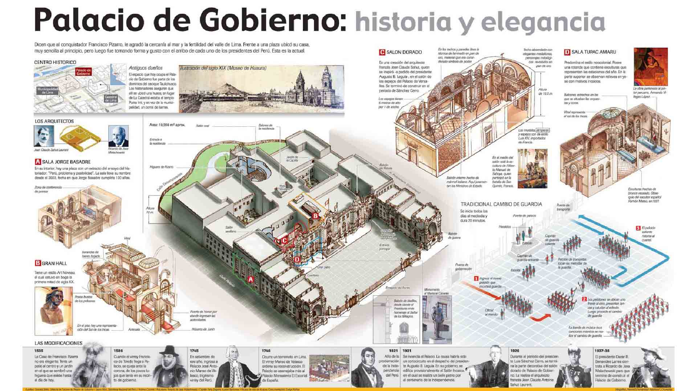
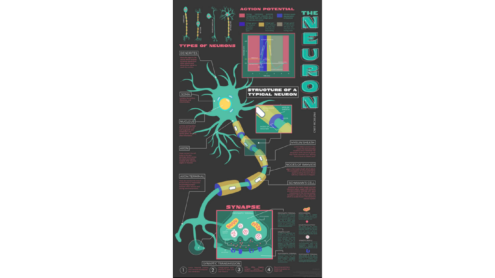
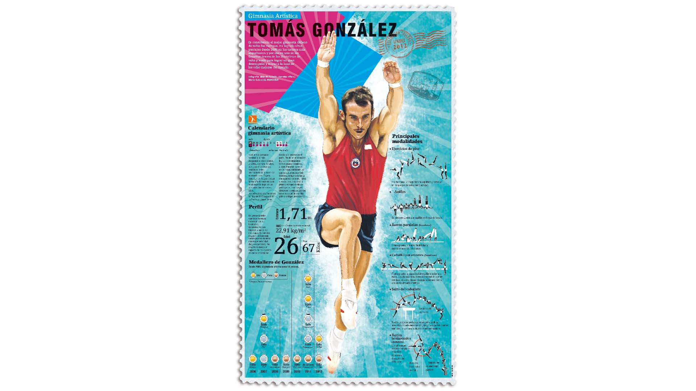
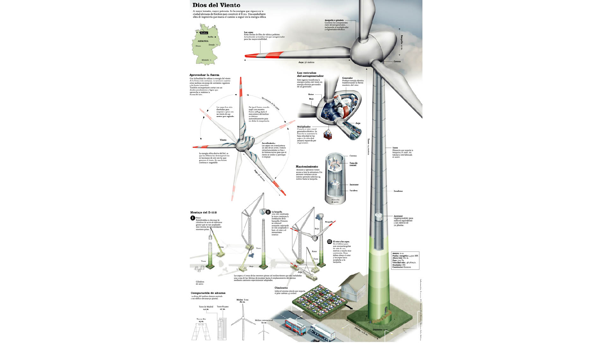
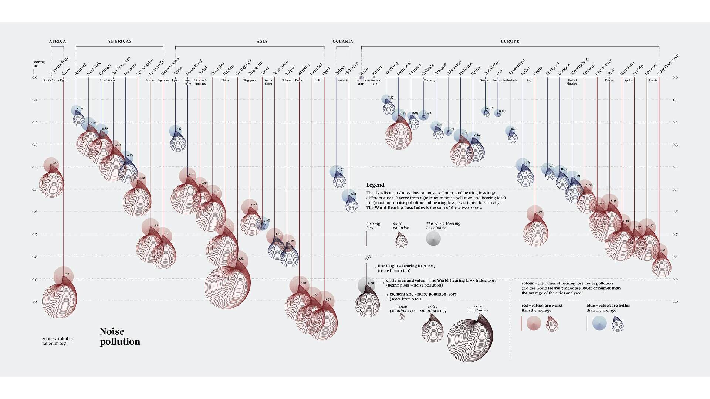
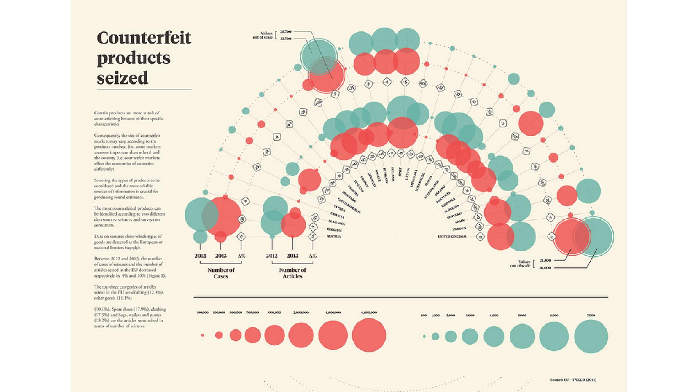
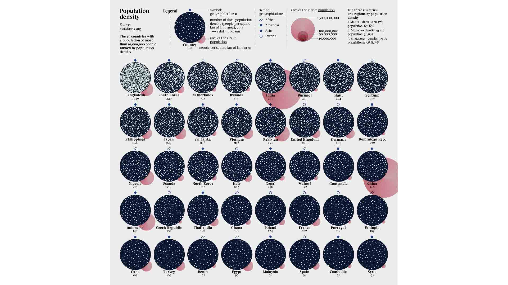
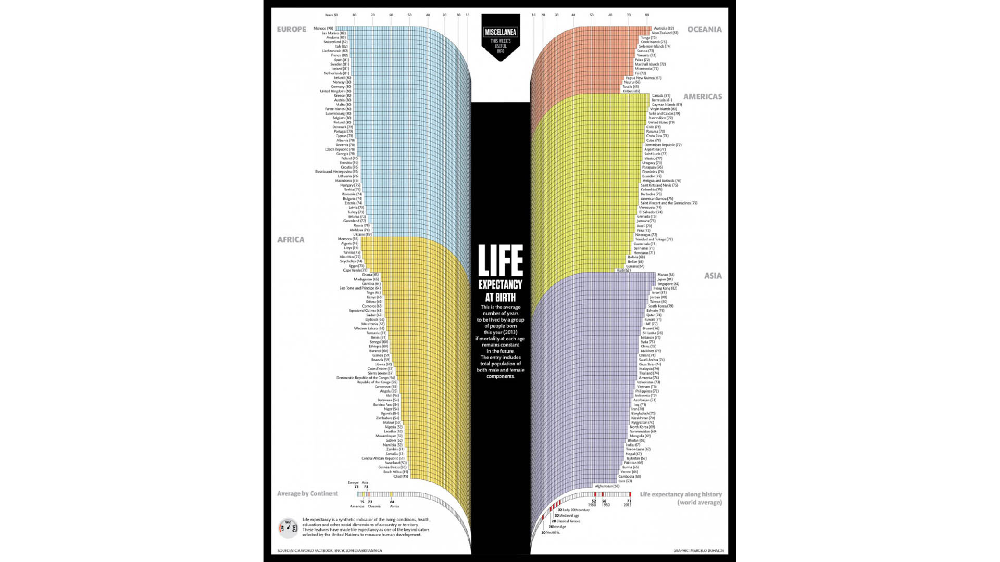

Información en gráficos figurativos

Palacio de Gobierno
Luis Chumpitaz, 2014. Sitio Web.

The Neuron
Patricia Lao, 2021. Behance.

Gimnasia Artística, Tomás Gonzalez
Marcelo Duhalde, 2012. Visual Loop.

Dios del viento
Mariano Zafra, 2009. Flickr.
Información en gráficos no figurativos

Noise Pollution
Federica Fragapane, 2020. Behance.

Counterfeit Products Seized
Ilaria Mastro, 2021. Behance.

Population Density
Federica Fragapane, 2020. Behance.

Life Expectancy at Birth
Marcelo Duhalde, 2014. Laughing Squid.